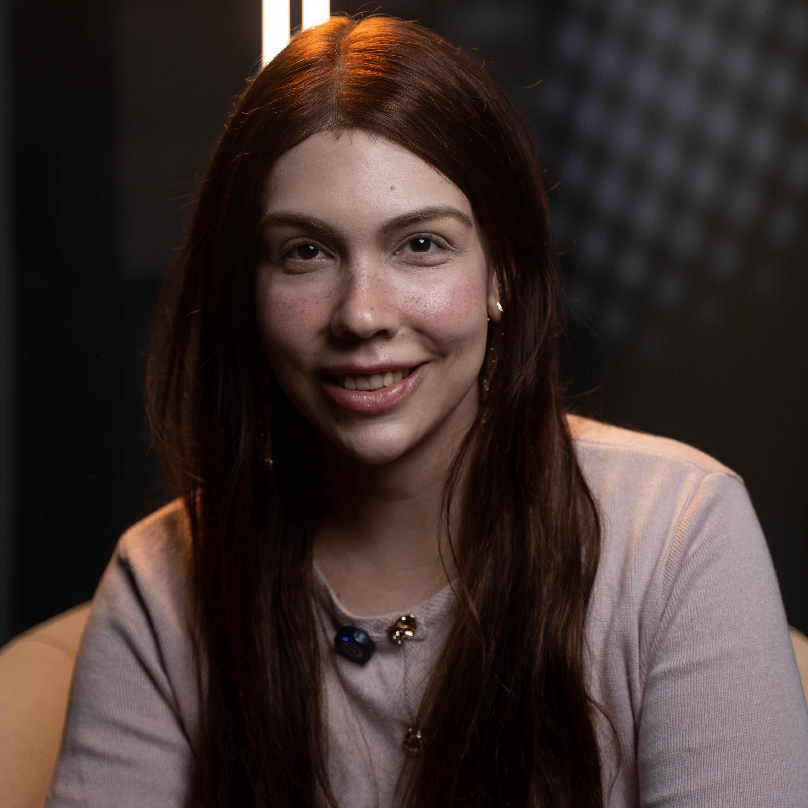

Hello, Human! Sua Sofia Marshallowitz, Mestre em Ciência da Computação pela Universidade Federal do Rio Grande do Sul, MBA em Segurança de Dados pela USP e Bacharel em Direito pelo Mackenzie.
Eu nunca quis caber em uma área só. Não por indecisão, mas porque as perguntas que me interessam não cabem em uma única disciplina. Foi assim que eu fui parar entre computação, direito e comportamento. Não como caminhos separados, mas como partes de um mesmo problema: como decisões são tomadas, e por quem.
Atualmente sou pesquisadora e consultora independente, professora de pós-graduação em ciência de dados na PUC Campinas e mãe de pet, a Hedwig.
O Engine de Inferência Estatística nasceu de uma pergunta prática: quando temos um schema de dados parcial, o que podemos inferir honestamente, e como comunicar isso sem fabricar pseudo-confiança? A resposta levou à formulação de cobertura ponderada do modelo (weighted model coverage), uma métrica formalmente definida com pesos derivados da literatura científica original. O engine está descrito em detalhe na documentação de referência e em preprint disponível no SSRN.